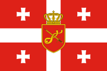

LeBron Raymone James Sr. (/ləˈbrɒn dʒeɪmz/;[1] lə-BRON; born December 30, 1984) is an American professional basketball player for the Los Angeles Lakers of the National Basketball Association (NBA). Nicknamed "King James", he is widely recognized as one of the greatest players in the sport's history and is often compared with Michael Jordan in debates over the greatest basketball player of all time.[dubious – discuss][a] James has won four NBA championships from 10 NBA Finals appearances, having made eight consecutive appearances between 2011 and 2018.[2] He also won the inaugural NBA Cup in 2023 with the Lakers and three Olympic gold medals as a member of the U.S. men's national team.
_(cropped2).png)
საქართველოს თავდაცვის ძალები (2019 წლამდე საქართველოს შეიარაღებული ძალები) — საქართველოს სამხედრო ძალების ძირითადი და არასაომარ მდგომარეობაში ერთადერთი სამხედრო ორგანიზაცია, რომლის დანიშნულებაა საქართველოს დამოუკიდებლობის, სუვერენიტეტისა და ტერიტორიული მთლიანობის დაცვა, აგრეთვე საქართველოს მიერ ნაკისრ საერთაშორისო ვალდებულებათა შესრულება. სახელმწიფო მართვის ორგანოა საქართველოს თავდაცვის სამინისტრო, ხოლო ოპერატიული მართვისა — გენერალური შტაბი. საქართველოს თავდაცვის ძალები შედგება სახმელეთო ჯარებისაგან.[2] თავდაცვის ძალების რეზერვს აყალიბებს და ორგანიზაციას უწევს საქართველოს ეროვნული გვარდია.
Khvicha Kvaratskhelia (Order of Honor) (Georgian: ხვიჩა კვარაცხელია pronounced ['χʷitʃʰa kʼʷara'tsʰχelia]; born 12 February 2001)[4] is a Georgian professional footballer who plays as a winger for Serie A club Napoli and the Georgia national team. Kvaratskhelia started his senior career playing for Dinamo Tbilisi at age 16, before departing to Rustavi where he spent half a season. During his combined three-year tenure at Lokomotiv Moscow and Rubin Kazan, Kvaratskhelia won two consecutive Russian Premier League Best Young Player awards. Following a short spell at Dinamo Batumi, Kvaratskhelia signed for Napoli in 2022, and in his debut season helped the club to reach the quarter-final of the UEFA Champions League for the first time ever, and win a first Serie A title in 33 years, finishing as the league's top assist provider. This saw him named Serie A Most Valuable Player and the Champions League's Young Player of the Season.[5]